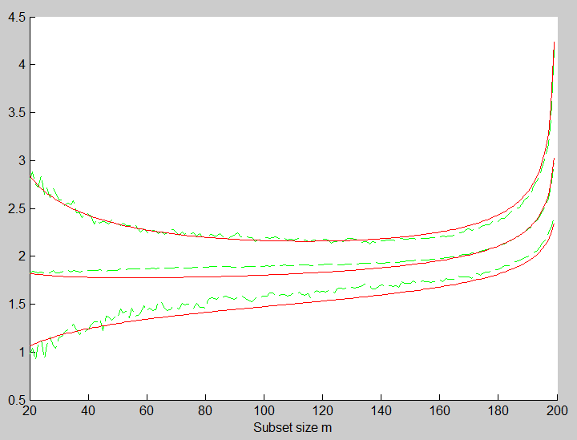

| Flexible Statistics Data Analysis Toolbox™ |
|
| Provide feedback on FSDA toolbox |
Theoretical envelopes of Minimum Deletion Residual outside subset during the search
[MDRenv] = FSRenvmdr(n,p)
[MDRenv] = FSRenvmdr(n,p,param1,val1,param2,val2,...)
[MDRenv] = FSRenvmdr(n,p) computes the envelopes of the minimum deletion residuals. This function exploits the link between minimum outside subset and m+1th ordered distance together with the relationships between random variables.
n : scalar, number of observations
p : number of explanatory variables (including the intercept if present)
[MDRenv] = FSRenvmdr(n,p) returns the following information
[MDRenv] = FSRenvmdr(n,p,val1,param2,val2,...) specifies one or more of the name/value pairs described in the following table.
| Parameter | Value |
|---|---|
| 'init' |
Scalar which specifies the initial subset size to monitor
minimum deletion residual, if init is not specified it will
be set equal to to start monitoring exceedances,
if init is not specified it will be set equal to |
| 'prob' |
1-by-k vector containing quantiles for which envelopes have to be computed. The default is to produce 1%, 50% and 99% envelopes. |
| 'exact' |
Scalar, if it is equal to 1 the calculation of the quantiles of the T and F distribution is based on functions finv and tinv from the Matlab statistics toolbox, otherwise the calculations of the former quantiles is based on functions invcdff and invcdft. The solution has a tolerance of 1e-8 (change variable tol in files invcdff.m and invcdft.m if required. Remark: the use of functions tinv and finv is more precise but requires more time |
In this example we compare the accuracy of the envelopes computed with order statistics with those which come from simulations.
% Fix a seed
state=1000;
mtstream = RandStream('shr3cong','Seed',state);
RandStream.setDefaultStream(mtstream);
defaultStream = RandStream.getDefaultStream();
reset(defaultStream)
% If you run this example in a version older than 7.9 replace the previous
% four lines with
% randn('state', 1000);
n=200;p=3;
X=randn(n,p);
init=20;
nsimul=1000;
mdrStore=zeros(n-init,nsimul);
for j=1:nsimul
y=randn(n,1);
[out]=LXS(y,X,'nsamp',1000','msg',0);
mdr = FSRmdr(y,X,out.bs,'init',init);
mdrStore(:,j)=mdr(:,2);
end
% Sort rows of matrix mdrStore
mdrStore=sort(mdrStore,2);
% Create figure which compares empirical and theoretical forward envelopes
% for minimum deletion residual
figure;
hold('on');
quant=[0.01 0.5 0.99];
sel=round(nsimul*quant);
% Plot lines of empirical quantiles
line(mdr(:,1),mdrStore(:,sel),'LineStyle','--','Color','g');
% Plots lines of theoretical quantiles using order statistics
mdrT=FSRenvmdr(n,p+1,'exact',1,'init',init);
line(mdrT(:,1),mdrT(:,2:4),'LineStyle','-','Color','r');
xlabel('Subset size m');
The plot you get is displayed below. The agreement between the two sets of bands appears good especially for the upper (99%) confidence band.
| Provide feedback on FSDA toolbox |
|
|
fsreda.html | fsrfan.html |
|